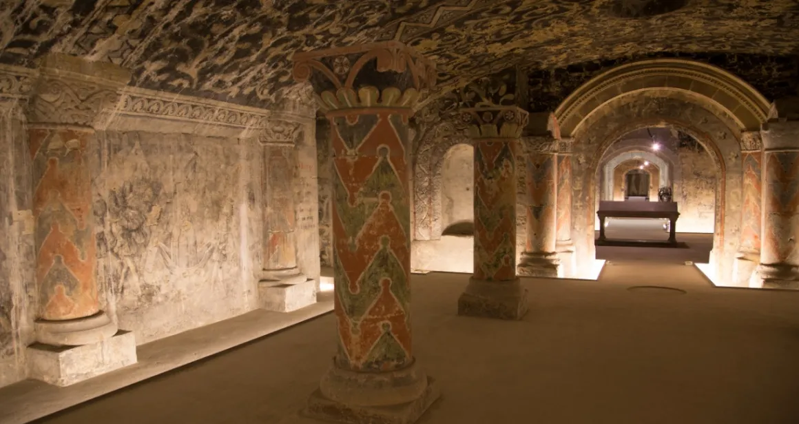

LA CRIPTA PERDIDA
Año 1927. El reconocido arqueólogo Sebastián Lemus ha dedicado los últimos cinco años de su vida a buscar la legendaria Cripta de Ixbalanqué, un lugar mencionado en los antiguos códices mayas como "el umbral entre el mundo de los vivos y los muertos".
Después de meses de expedición por la selva guatemalteca, guiado por historias locales y mapas coloniales, finalmente te encuentras frente a una imponente estructura de piedra caliza, parcialmente cubierta de musgo y raíces centenarias. El aire es denso, húmedo, y se escucha el eco lejano de gotas de agua filtrándose entre las rocas.
Según las inscripciones en la entrada, "quien entre sin respeto quedará atrapado por siempre".
